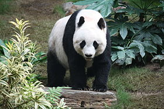

Gấu Trúc
Gấu trúc lớn (Ailuropoda melanoleuca, nghĩa: "con vật chân mèo màu đen pha trắng", giản thể: 大熊猫; phồn thể: 大熊貓; bính âm: dàxióngmāo, nghĩa "mèo gấu lớn", tiếng Anh: Giant Panda),[2] cũng được gọi một cách đơn giản là gấu trúc, là một loài gấu[3] nguồn gốc tại Trung Quốc.[1] Nó dễ dàng được nhận ra bởi các mảnh màu đen, lớn xung quanh mắt, trên tai, và tứ chi nó. Tuy thuộc về bộ Carnivora (bộ Ăn Thịt), chế độ ăn của gấu trúc gồm hơn 99% tre, trúc.[4] Gấu trúc trong tự nhiên ăn thỉnh thoảng cỏ, củ dại, hay thậm chí thịt chim, gậm nhấm hay xác thối. Trong tình trạng giam cầm, gấu trúc ăn mật ong trứng, cá, lá cây bụi, cam, hay chuối cùng với các loại thức ăn đặc biệt khác.
Gấu trúc lớn sống ở một vài vùng núi ở trung tâm Trung Quốc, chủ yếu ở Tứ Xuyên, nhưng cũng xuất hiện ở Thiểm Tây và Cam Túc.[7] Nông nghiệp, phá rừng đã đẩy gấu trúc khỏi các vùng đồng bằng chúng từng sinh sống.

Là một loài nguy cấp phụ thuộc bảo tồn.[8] Một báo cáo 2007 cho thấy 239 cá thể gấu trúc sống trong điều kiện giam cầm ở Trung Quốc và 27 nước khác trên thế giới.[9] Ước lượng số lượng hoang dã rất khác nhau; một ước tính cho thấy có khoảng 1.590 cá thể sống trong tự nhiên,[9] trong khi một nghiên cứu năm 2006 thông qua phân tích ADN ước tính rằng con số này có thể cao đến 2000 đến 3000.[10] Một số báo cáo cũng cho thấy rằng số lượng gấu trúc trong tự nhiên đang ngày càng tăng.[11][12] Tuy nhiên, IUCN không tin rằng đủ chắc chắn để chuyển loài này từ nguy cấp thành dễ thương tổn.
Trong tự nhiên, gấu trúc sống trên cạn và dành phân lớn thời gian để đi lang thang và ăn trong các rừng tre, trúc ở vùng đồi núi Tân Lĩnh và tỉnh Tứ Xuyên.[13] Gấu trúc lớn thường sống đơn độc,[14] và mỗi con trưởng thành có một vùng lãnh thổ được xác định, con cái trưởng thành sẽ không tha thứ cho con cái nào dám đi vào lãnh thổ của nó. Gấu trúc giao tiếp thông qua tiếng kêu và đánh dấu mùi như cào cây hoặc đánh dấu nước tiểu.[8] Chúng cũng có thể leo lên và trốn trong các hốc cây, nhưng không làm tổ lâu dài. Vì lý do này, gấu trúc không ngủ đông, tương tự như động vật có vú cận nhiệt đới khác, và thay vào đó di chuyển đến vùng có nhiệt độ ấm hơn.
Các cuộc gặp gỡ xã hội xảy ra chủ yếu trong mùa sinh sản ngắn.[16] Sau khi giao phối, con đực rời đi, để con cái một mình để đẻ.
Mặc dù gấu trúc được cho là ngoan ngoãn, nó được biết tới từng tấn công con người, có thể do bị chọc tức chứ không phải do thích gây sự.